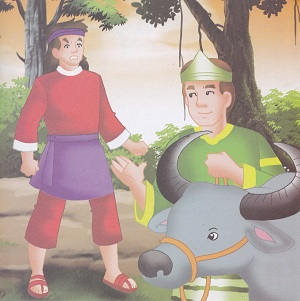

Ladana dan Kerbau
( Cerita Rakyat Sulawesi Selatan )
La Dana adalah seorang anak petani dari Toraja. Ia sangat terkenal akan kecerdikannya. Kadangkala kecerdikan itu ia gunakan untuk memperdaya orang. Sehingga kecerdikan itu menjadi kelicikan. Pada suatu hari ia bersama temannya diundang untuk menghadiri pesta kematian. Sudah menjadi kebiasaan di tanah toraja bahwa setiap tamu akan mendapat daging kerbau.
La Dana diberi bagian kaki belakang dari kerbau. Sedangkan kawannya menerima hampir seluruh bagian kerbau itu kecuali bagian kaki belakang. Lalu La Dana mengusulkan pada temannya untuk menggabungkan daging-daging bagian itu dan menukarkannya dengan seekor kerbau hidup. Alasannya adalah mereka dapat memelihara hewan itu sampai gemuk sebelum disembelih. Mereka beruntung karena usulan tersebut diterima oleh tuan rumah.
Seminggu setelah itu La Dana mulai tidak sabar menunggu agar kerbaunya gemuk. Pada suatu hari ia mendatangi rumah temannya, dimana kerbau itu berada, dan berkata “Mari kita potong hewan ini, saya sudah ingin makan dagingnya.” Temannya menjawab, “Tunggulah sampai hewan itu agak gemuk.”
Lalu La Dana mengusulkan, “Sebaiknya kita potong saja bagian saya, dan kamu bisa memelihara hewan itu selanjutnya.” Kawannya berpikir, kalau kaki belakang kerbau itu dipotong maka ia akan mati. Lalu kawannya membujuk La Dana agar ia mengurungkan niatnya. Ia menjanjikan La Dana untuk memberinya kaki depan dari kerbau itu.
Seminggu setelah itu La Dana datang lagi dan kembali meminta agar bagiannya dipotong. Sekali lagi kawannya membujuk. Ia dijanjikan bagian badan kerbau itu asal La Dana mau menunda maksudnya. Baru beberapa hari berselang La Dana sudah kembali kerumah temannya. Ia kembali meminta agar hewan itu dipotong.

Kali ini kawannya sudah tidak sabar, dengan marah ia pun berkata, “Kenapa kamu tidak ambil saja kerbau ini sekalian! Dan jangan datang lagi untuk mengganggu saya.” La dana pun pulang dengan gembiranya sambil membawa seekor kerbau gemuk. Namun tak lama kemudian kerbau itu sakit dan mati karena tidak dirawat dengan baik. La Dana pun tidak mendapatkan apa-apa.